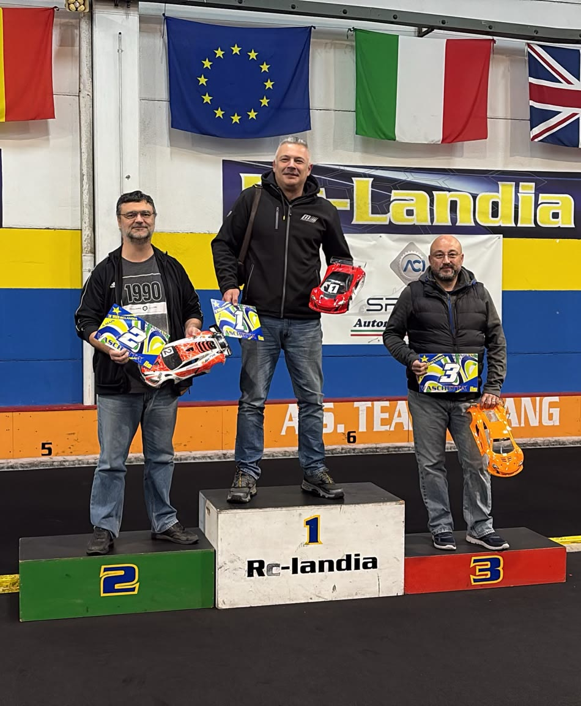
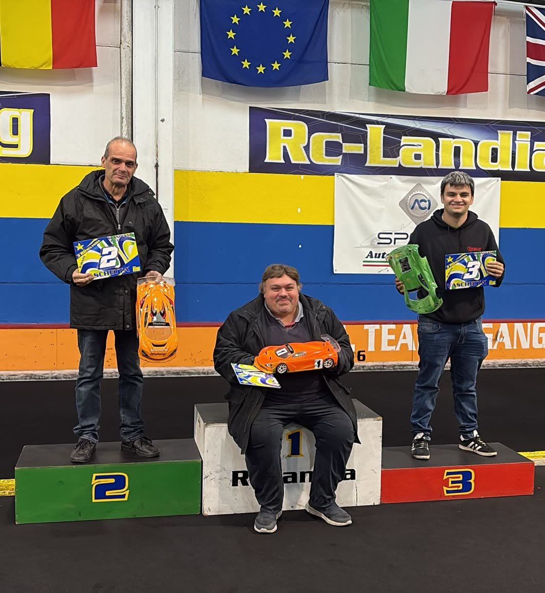

Dieci punti per tre
Tre prove, tre vincitori diversi. A Scandiano tocca a Massimo Ghidini, che dopo tre pole consecutive si prende finalmente anche la vittoria. Ma in campionato Imovilli e Violi restano lì, a un soffio.
Nella Vaschetta nessuno è ancora riuscito a fare il bis. La prima prova l'aveva vinta Matteo Violi, la seconda Massimo Imovilli, e in entrambe a partire davanti a tutti era stato Massimo Ghidini, che però la domenica non era mai riuscito a chiuderla da primo. A RcLandia i piloti sono tredici, divisi in due gruppi, e le manche durano cinque minuti: poco tempo per rimediare a un errore.
La mattina
Ghidini e Violi sono i più rapidi nelle libere dei rispettivi gruppi. In qualifica Ghidini vince le prime due manche e nella seconda firma il giro più veloce della giornata, 15.093. Nella terza però Imovilli gli si mette davanti, e al traguardo i due arrivano con gli stessi venti giri.
Ghidini si prende comunque la pole, la terza su tre prove. Nell'altro gruppo Giovanni Gnesini vince tutte e tre le manche e si guadagna un posto in Finale A, dove parte sesto. Dietro di lui la Finale B schiera Bazzani in pole davanti a Cavatorti, Beniamino Gilioli, Massara, Tagliani e Bonora.
Finale A
La prima manche sembra il copione delle prove precedenti. Ghidini scatta dalla pole e conduce, ma al sesto giro prende male una boa e si ribalta. Il tempo di rimetterlo in piedi e Imovilli e Violi gli sono già davanti. Imovilli non si volta più e vince, Violi è secondo, Ghidini deve accontentarsi del terzo posto.
Più indietro Montanari vive una manche da dimenticare: urta un travetto, la carrozzeria gli si incastra tra le ruote e percorre qualche metro così prima che un commissario gliela sistemi. Ci lascia quasi mezzo minuto.
Nella seconda manche Ghidini cambia passo. Parte, prende il comando e lo tiene fino alla bandiera, ma Imovilli gli resta incollato per tutti i diciannove giri.
Alle loro spalle, al sesto giro, nello yin e yang , le due isole contrapposte che portano al traguardo e che poco prima avevano tradito Tolomelli e Mecugni nella 1/12, Violi tocca Venturelli, che si ribalta. Violi si ferma, aspetta che il commissario lo rimetta in pista e gli rende il posto: un gesto che gli costa due posizioni. A raccogliere il terzo posto è Piluzza, che sale dal quinto.
La terza manche è quella della conferma. Ghidini prende il comando al primo metro e non lo cede più, chiudendo a un secondo e mezzo da Violi, secondo. Imovilli invece parte male e dopo il primo giro è quinto. Risale fino al terzo posto, poi all'undicesimo giro sbaglia da solo, finisce contro un travetto e scivola quarto, ma rimonta di nuovo fino al terzo. Per Piluzza la manche finisce dopo un solo giro.
Con due vittorie e un terzo posto Ghidini vince la giornata davanti a Imovilli e Violi. Piluzza è quarto, davanti a Venturelli, Montanari e Gnesini.
Finale B
Anche la Finale B ha un suo padrone, ma deve sudarselo. Nella prima manche Bazzani parte dalla pole e guida per due giri, poi Beniamino Gilioli lo infila senza toccarlo e non gli lascia più spazio.
La seconda manche parte nervosa: qualche errore e qualche contatto nel traffico rimescolano tutto, e dopo il primo giro in testa c'è Massara, che partiva quarto, mentre Bazzani è scivolato quarto. Al terzo giro Massara perde terreno e il comando passa a Cavatorti, al quinto Bazzani se lo riprende e lo porta fino in fondo. Tre leader diversi in cinque giri. Gilioli completa la rimonta a tre giri dalla fine, quando passa Cavatorti per il secondo posto.
Nella terza Bazzani non concede niente: comanda per tutti e cinque i minuti, senza farsi sorprendere neppure dal traffico dei doppiati. Cavatorti lo insegue a lungo da secondo, ma al quattordicesimo giro, dopo un paio di contatti con Gilioli, si ferma. Gilioli eredita il secondo posto, Massara chiude terzo.
Con due vittorie Bazzani si prende la Finale B davanti a Gilioli e Massara.
Il campionato
Tre prove, tre vincitori, e una classifica che non vuole saperne di allungarsi. Ghidini passa in testa, ma Imovilli è a cinque punti e Violi a dieci. Piluzza, quarto, è più staccato ma costante.
Chi farà il bis per primo? Alla prossima prova la risposta.
Il podio di giornata

PoleMassimo Ghidini
- Massimo Imovilli2
- Massimo Ghidini1
- Matteo Violi3
Il podio della Finale B

- Beniamino Gilioli2
- Paolo Bazzani1
- Andrea Massara3
4. Michele Piluzza · 5. Filippo Claudio Venturelli · 6. Silvano Montanari · 7. Giovanni Gnesini · 8. Paolo Bazzani (vincitore Finale B) · 9. Beniamino Gilioli · 10. Andrea Massara · 11. Andrea Cavatorti · 12. Riccardo Bonora · 13. Daniele Tagliani
Segui il microfono
L'ospiteMassimo Ghidini, detto GhidoVaschetta · 1° in Finale A